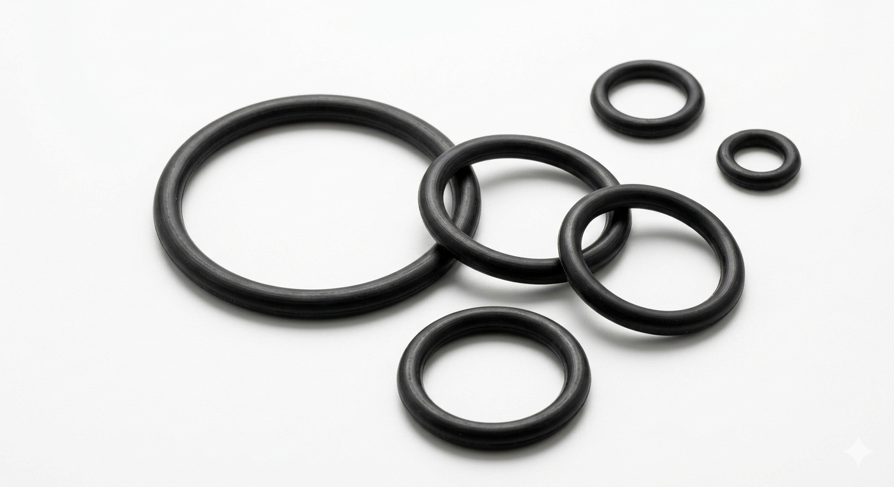

O-Rings & Custom Sealing Rings
Standard AS568 and metric (ISO 3601) inventory-style supply, Garlast™ FFKM for aggressive media, and custom cross-sections when a catalog ring is not quite right—including cover-up style rings for non-standard grooves (oversized cross-section or diameter to “cover” worn or legacy glands—confirm fit with a drawing).
O-rings are the most versatile and widely used sealing solution across industries. Our portfolio includes standard sizes, metric references, and custom configurations in multiple elastomers—aligned with how buyers actually procure: clear standards, datasheets, and engineering support.
Why Specify Garlast For O-Rings
- Standard AS568, ISO 3601 metric, and custom dimensions
- Compounds from general-purpose NBR/EPDM through FKM, HNBR, silicone, and Garlast™ FFKM
- Engineering review of groove, squeeze, and media compatibility on request
- Scale from samples and prototypes to production volumes
- Links to in-house size charts and material selection tools

Additional Information To Send For the Swiftest Quote
- Part definition: Dash number (e.g. AS568-214) or drawing with ID, CS, tolerances, and quantity breaks.
- Material: Polymer family, hardness (Shore A), color, and any spec (FDA, USP Class VI, fuel, etc.).
- Application envelope: Media, max temperature & pressure, static vs dynamic, and assembly method.
- Quality & logistics: CoC, PPAP level, bagging/labeling, and ship-to region.
- Don't hesitate to request a quote, our team will assist you with your sealing needs!
Product Types
Standard O-Rings
Standards: AS568, ISO 3601, DIN, JIS
Materials: NBR, EPDM, FKM, Silicone, HNBR, Garlast™ FFKM
Applications: Hydraulic systems, pneumatic systems, general sealing
Cover-Up / Retrofit O-Rings
Definition: Non-catalog diameter or CS to fill an existing groove when hardware cannot change—requires drawing sign-off.
Materials: All standard elastomers available
Applications: Legacy equipment, tooling limitations, field service kits
Garlast™ FFKM O-Rings
Temperature (indicative): -20°C to +327°C — verify per grade datasheet
Key benefits: Ultra-high purity options, broad chemical resistance
Applications: Semiconductor, pharmaceutical, chemical processing
Custom O-Rings
Capabilities: Non-standard sizes, dual materials, bonded inserts — [TBD]
Tooling: [NRE / no NRE — TBD]
Applications: OEM programs, approvals, long-term agreements
Popular Elastomers
Approximate dry air temperature windows only—final suitability depends on media, pressure, and hardware. Confirm with testing or Garlast engineering.
NBR (Nitrile)
Typical range: approx. -35°C to +120°C (specialty nitriles may extend — [TBD])
- Strong general-purpose choice for oils, fuels, and hydraulic fluids at moderate temperature.
- Ozone and UV limited—avoid outdoor exposure without protection.
EPDM
Typical range: approx. -50°C to +150°C
- Excellent water, steam, brake fluid (DOT), and weather resistance.
- Not suited for hydrocarbon oils and fuels.
FKM (Viton™-Type)
Typical range: approx. -26°C to +200°C (compound dependent)
- Broad chemical resistance and elevated temperature vs NBR.
- Common in fuel systems, chemical process, and high-performance hydraulics.
FFKM (Garlast™)
Published range (grade dependent): -20°C to +327°C — see Material Selection guide
- Near-universal chemical resistance for aggressive plasmas, acids, amines, and high temperature.
- Specify grade for semiconductor, pharma, or food contact as applicable.
Silicone & HNBR
Silicone typical: approx. -60°C to +200°C static · HNBR: improved heat/oil vs NBR — [TBD specs]
- Silicone: low closure force, food/pharma grades available — [TBD].
- HNBR: sour gas, refrigerants, and higher temperature oil service — [TBD].
Applications
Hydraulic & Pneumatic Systems
Reliable sealing for cylinders, valves, pumps, and actuators in industrial and mobile equipment.
Automotive Components
Engine seals, transmission systems, fuel systems, and brake components requiring durable sealing solutions.
Industrial Equipment
General-purpose sealing for machinery, processing equipment, and manufacturing systems across multiple industries.
High-Performance Applications
Extreme temperature, chemical resistance, and ultra-pure environments using Garlast™ FFKM and specialty compounds.
FAQ
What is the difference between an O-ring and a gasket?
What does “cover-up” mean for O-rings?
Can you match a competitor compound or color?
Do temperature tables replace application testing?
Related Resources
Information on this page is for general selection only. Garlast makes no warranty that parts will perform satisfactorily in your application until qualified by your tests and approvals. Temperature bands are not substitute for end-use validation. Replace all [TBD] and placeholder fields with approved commercial data before external publication.